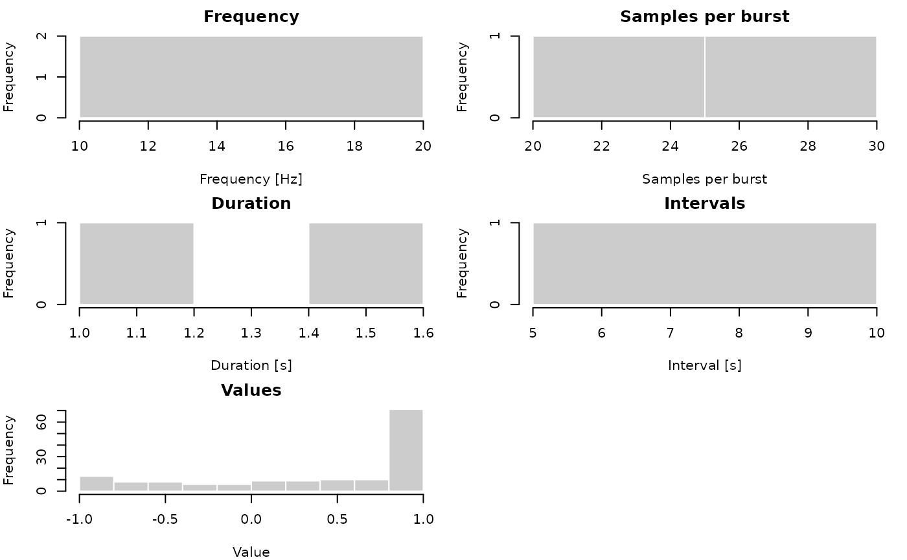
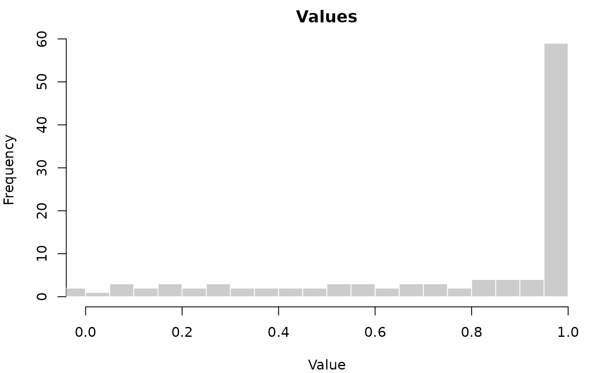

Provides a diagnostic overview of an IMU vector (acc, mag, or gyro) —
axis combinations, frequencies, burst sizes, timing, and a coarse quantile
summary of the burst sample values. Calling plot() on the result draws a
multi-panel histogram of those same distributions.
Intervals are the gaps between consecutive bursts (end of one to the start
of the next), computed in vector order (see burst_intervals()). If bursts
come from different sources (e.g. different tags), there may be noticeable
interval artifacts between some bursts where sources change.
Note that the distribution of sample values considers all axes and units simultaneously.
Arguments
- object
An
imuobject.- ...
For
plot(), passed tographics::hist().- x
An
imu_summaryobject (returned bysummary()).- panel
Optional character vector of panel names or integer vector of panel positions, restricting which panels are drawn. Valid names:
"Frequency","Samples per burst","Duration","Intervals", and/or"Values". By default, all panels are drawn.
Examples
a <- acc_example()
s <- summary(a)
s
#> 2 acc bursts
#> from 1970-01-01 to 1970-01-01 00:00:10 UTC
#>
#> Axes: XYZ (2)
#> Frequencies: 20 -- 20 [Hz]
#> Samples per burst: 20 -- 30
#> Durations: 1 -- 1.5 [s]
#> Intervals: [ 8.5 / 8.5 / 8.5 / 8.5 / 8.5 ] [s] (min/Q1/med/Q3/max)
#>
#> Values: [ -1 / -0.1 / 0.73 / 1 / 1 ] (min/Q1/med/Q3/max)
#> Units: [no units]
plot(s)

# Focus on a single panel, with custom binning/xlim
plot(s, panel = "Values", breaks = 50, xlim = c(0, 1))
